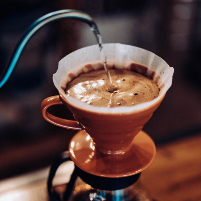
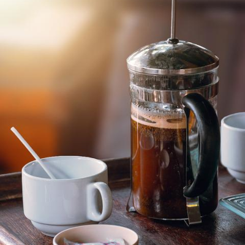
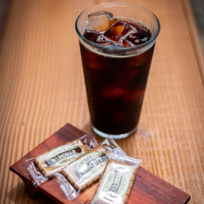
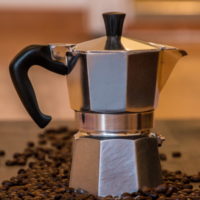
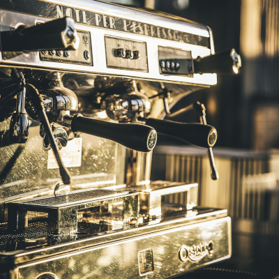

Measuring coffee by weight makes sharing recipes online significantly easier while maintaining incredible repeatability. This is in contrast to the usual home measurement of “three or four scoops,” which lacks consistency between people. With practice, someone can become consistent with a “spoonful of coffee,” but even if an individual’s scoop stays constant, no two people will have the same “scoop.” Measuring in tablespoons or other constants is better, but different grind sizes will settle into volumetric measurements differently. More finely ground coffee will fit into a tablespoon than coarsely ground coffee. If you’re getting coffee recipes online, weight is the way to go.
The Necessity of Ratios
Grind size and exact temperature require specialized equipment to control with precision, but everyone can control how much coffee and water they put in their coffee maker. Too much coffee can lead to over extraction and sharp bitterness. Too little can lead to under extraction and bland sourness. With a guiding recipe to get you close and some slight tweaking based on taste, controlling the ratio of coffee to water is the best choice for those unwilling or unable to spend hundreds of dollars on metal burr coffee grinders or PID controlled gooseneck kettles. All you need are your tastebuds and a cheap digital scale.
Brewing Methods

Percolation
Thanks to automatic coffee makers like those made by Mr. Coffee, this is the most common way to brew coffee in the United States. Pour over brewers, where hot water is manually poured from a gooseneck kettle into the brewer, fall into this category as well. Hot water contacts a bed of ground coffee, extracting the flavors as it flows through the bed and out the bottom. If your filter papers are cone shaped, start with 1 gram of coffee per 17 grams of water. If your filter paper has a flat bottom. 1 to 18 may be a better starting point.

Immersion
Another popular choice are immersion brewers that let coarsely ground coffee steep in hot water for a few minutes before forcibly filtering out the coffee grounds at the end. The most well known immersion brewer is the ever popular french press. These can be a fantastic place to start with specialty coffee due to their forgiving nature. You can use your water boiler of choice, and accidentally leaving your coffee to steep for too long has a much lower impact on the taste than one would expect. The coarser grind size needed means more coffee will be needed. A good starting ratio is 1 gram of coffee per 12 grams of water.

Cold Brew
This method takes immersion brewing to the extreme. Instead of using hot water, cold brewing involves steeping coffee in cold water for hours or days at a time. This creates a highly concentrated coffee with low acidity. This lack of acidity can rob the coffee of some pleasant citrus or floral notes, but lessens the indigestion that can occur when you drink too much coffee. Simply refrigerate your water and coarse coffee mix in cheap mason jars and strain through cheesecloth after about a day. A common ratio for cold brew is 1 gram of coffee per 8 grams of water.

Moka
The moka pot is technically a form of percolation, but the preparation, extraction, and ratios used are different enough to warrant their own mention. Moka pots are stovetop brewers that boil water in a lower receptacle, which forces steam up through a bed of finely ground coffee and out the top. The high temperatures, fine grinds, and tight ratio of coffee to water make a highly extracted cup of coffee. If you want to make lattes or cappuccinos at home, the coffee from a moka pot is a much cheaper and easier way to get the needed high extraction coffee. A moka pot and cheap electric milk frother are orders of magnitude cheaper than what is required for decent espresso at home. A common ratio is 1 gram of coffee per 10 grams of water.

Espresso
Espresso applies the wonders of industrial invention to our favorite beverage of acidic dirt water. Your local coffee shop uses a machine that costs as much as a used car to make dozens of drinks an hour. Home baristas can get into espresso for the price of a slightly worse used car. Coffee made by firing water at six to ten bars of pressure through a compacted puck of coffee counts as espresso. This need for high pressures constitutes espresso’s high cost of entry and unique flavor profiles. The high pressures create an emulsified foam of coffee named “crema” by a savvy Italian marketer which gives espresso an entirely unique textural experience. Espresso’s extreme concentration makes it ideal for milk drinks like lattes, cappuccinos, and flat whites. If the cost of entry seems worth it, the classic starting ratio for espresso is 1 gram of coffee per 2 grams of water.
Grind Size
In general, fresh coffee will deliver better, more complex flavors. The best way to maintain freshness is to delay grinding the coffee for as long as possible. This means only the outer layer of your coffee is oxidizing. Additionally, different brewers work best with different sizes of coffee grinds, which pre-ground coffee can’t always account for. Starting out, the easiest way to guarantee the right grind size is to go to a local coffee shop. If they sell whole beans, you can tell the barista what brewer you are using and they will grind your chosen whole beans at the proper setting. This still allows the coffee to quickly age, so the allure of a home coffee grinder can often become the next logical step. As a warning, coffee grinding may be the most exhaustive, but rewarding, rabbit hole in coffee. The amount of options and knowledge can be overwhelming. In an attempt to keep this site as beginner friendly as possible, we will not go into any greater detail, but feel free to go down the rabbit hole yourself.